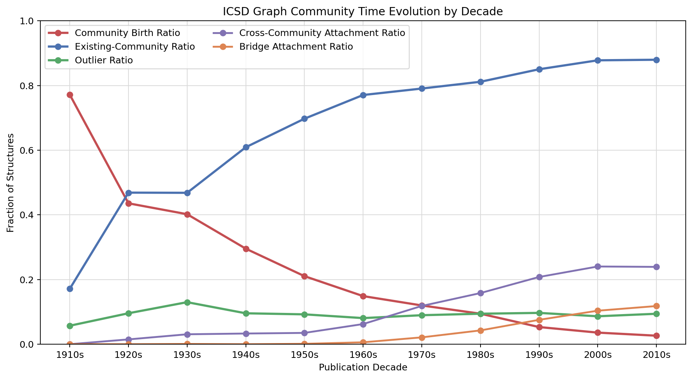
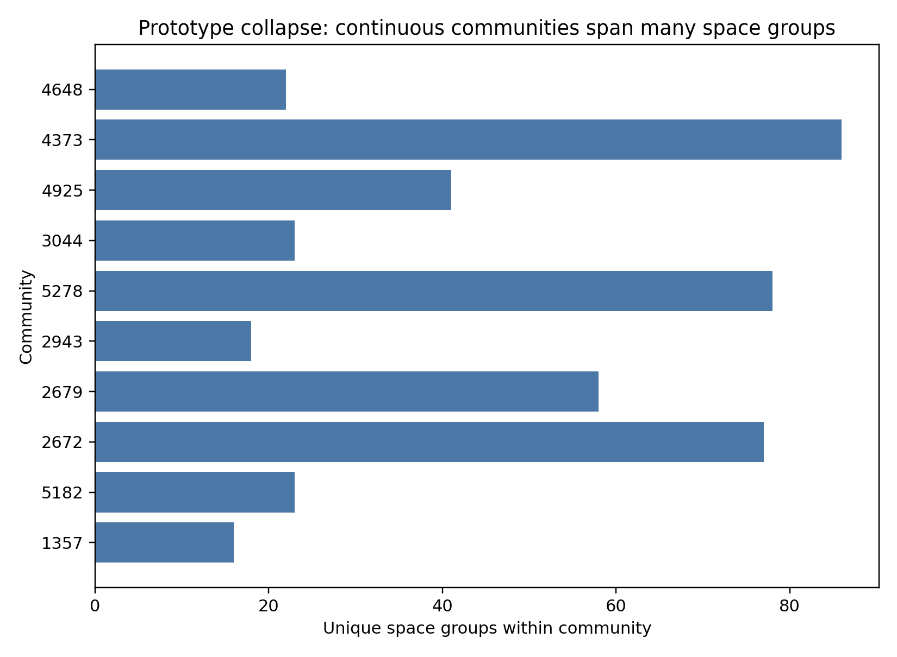
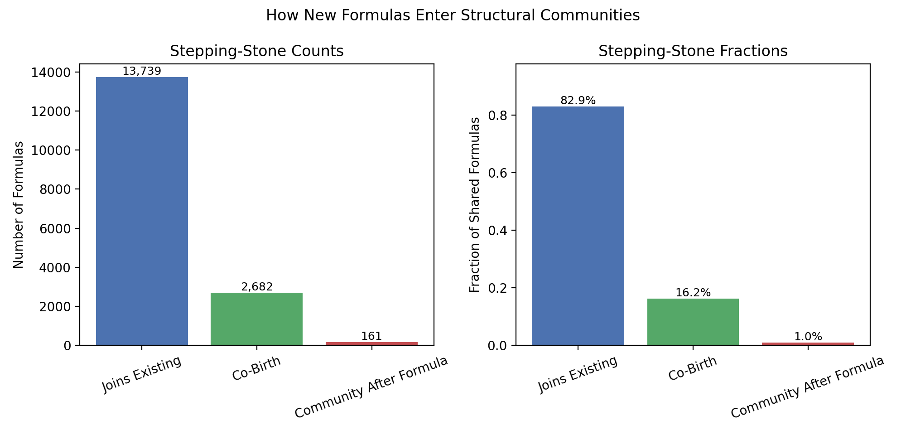

1. Structural Densification
The share of structures that open new communities collapses through time, while assignment to preexisting basins comes to dominate the ICSD record.
This page assembles the current ICSD structural-history results into a single visual hub: century-scale densification, thermodynamic stepping-stone behavior, and the calibration of GNoME and MatterGen against the historical human trajectory.
The current paper has three main acts: densification as the historical phenomenon, stepping-stone behavior as the mechanism, and generative-model calibration as the application.
The share of structures that open new communities collapses through time, while assignment to preexisting basins comes to dominate the ICSD record.
TRI-aligned analysis shows that new formulas overwhelmingly enter old neighborhoods first. Discovery is guided by historically accessible structural stepping stones.
Held-out historical maps separate ordinary human continuation from public AI outputs, with MatterGen closer to the human trajectory than GNoME.
These are the main static assets that currently support the manuscript and supporting information.

The clearest historical result: new community birth declines while occupancy of existing basins rises through the ICSD record.

Continuous structural basins absorb many nominally separate space groups, which is why the method is more robust than discrete prototype counting.

TRI-linked formulas overwhelmingly land inside already-established structural neighborhoods rather than founding new ones.

Generative outputs are more frontier-like than ordinary held-out ICSD continuation, with a stable ordering of humans, MatterGen, then GNoME.
The local HTML viewers already exist. This page is meant to become the hub that links and eventually wraps them into a cleaner benchmark/demo experience.
The strongest current way to inspect the basin geometry across decades.
Useful for understanding the cleaned graph structure and labeled basin relationships.
The current supplement-backed comparisons that sharpen the main story.
This first page is a static nucleus. The longer-term target is a usable evaluation portal for future generative crystal models.
{kind=link}
{kind=link}
{kind=link}